São Paulo: Largest city in the southern hemisphere, over 11 million inhabitants within city limits. We start slowly: barbershop, rooftop pool.
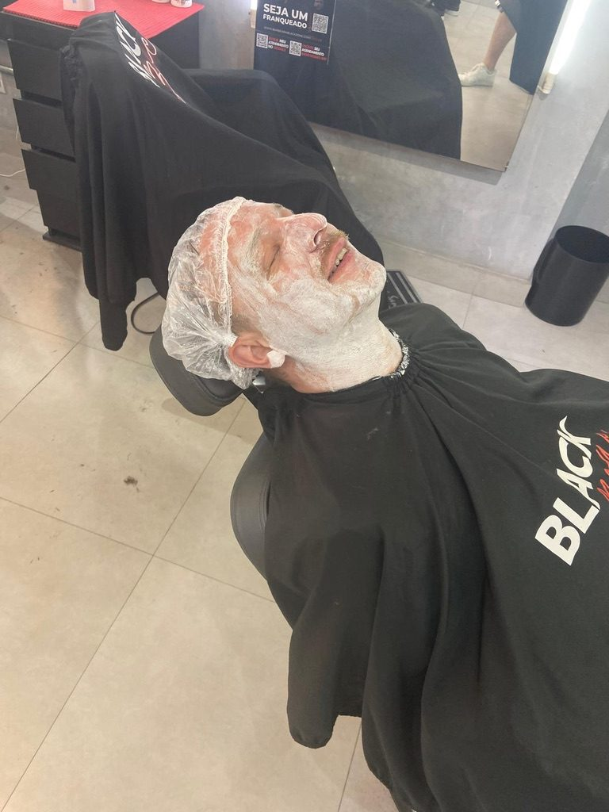
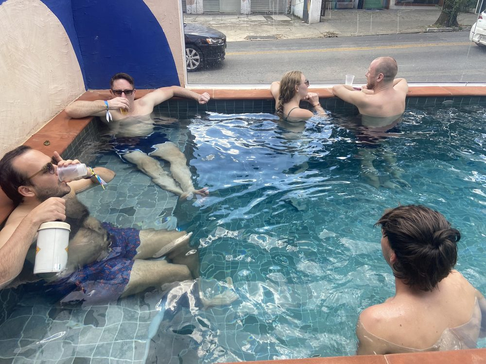
Centro: To the centre: the Igreja da Consolação and the Theatro Municipal of 1911, venue of the 1922 Modern Art Week that launched Brazilian modernism.
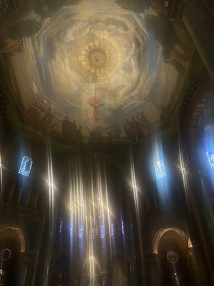
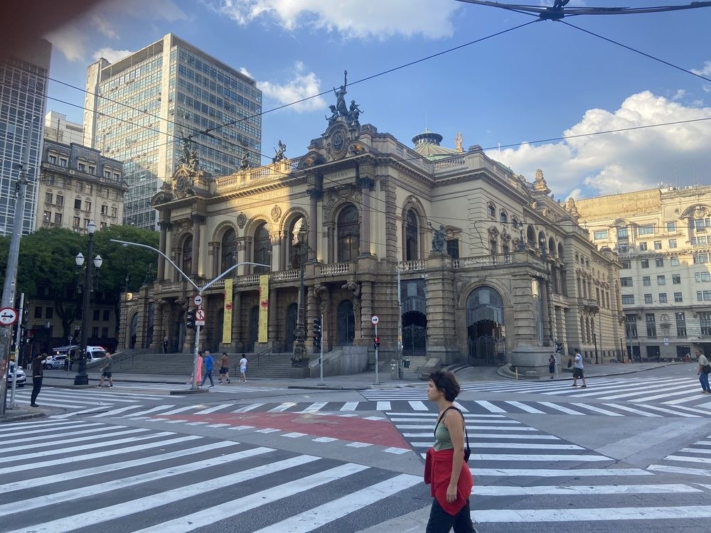
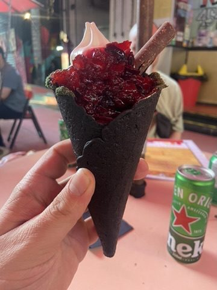
Beco do Batman: The alley in Vila Madalena got its name from a Batman graffiti in the 1980s. Today every wall is painted and regularly repainted; in the evening people sit on folding chairs right in the middle. To finish, dinner at Figueira Rubaiyat, a restaurant built around a huge old fig tree.
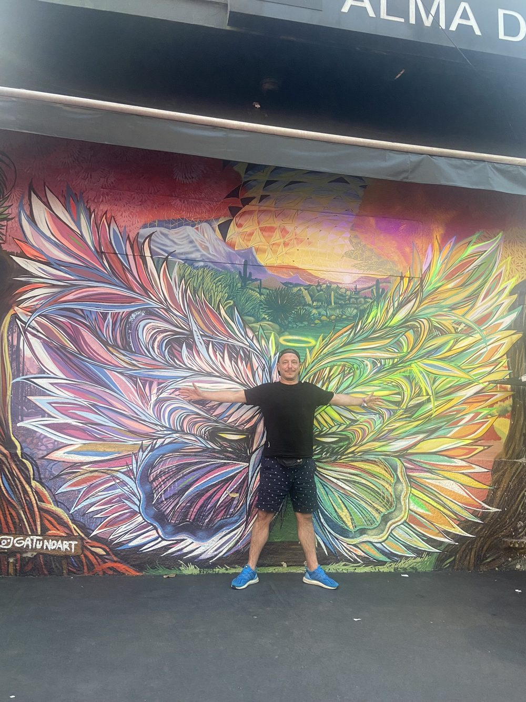
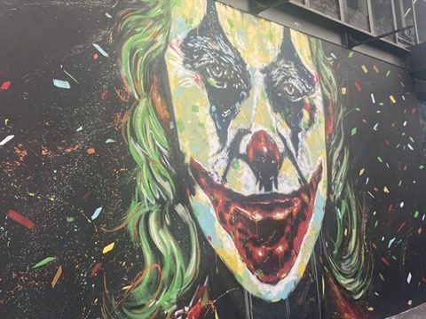
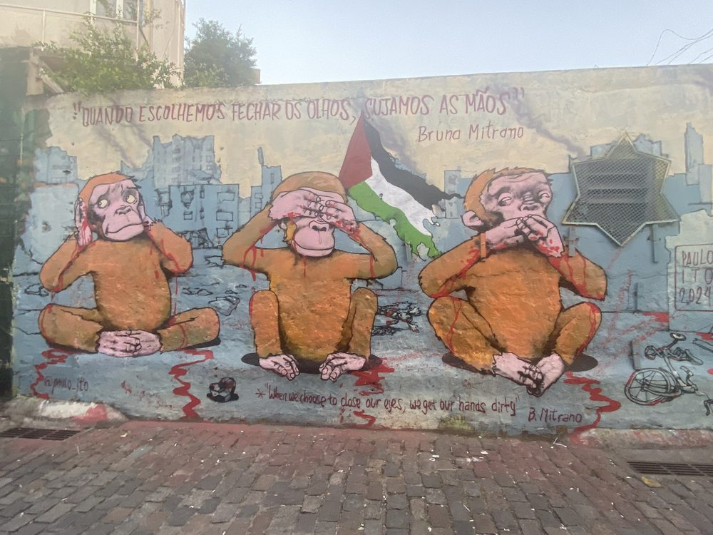
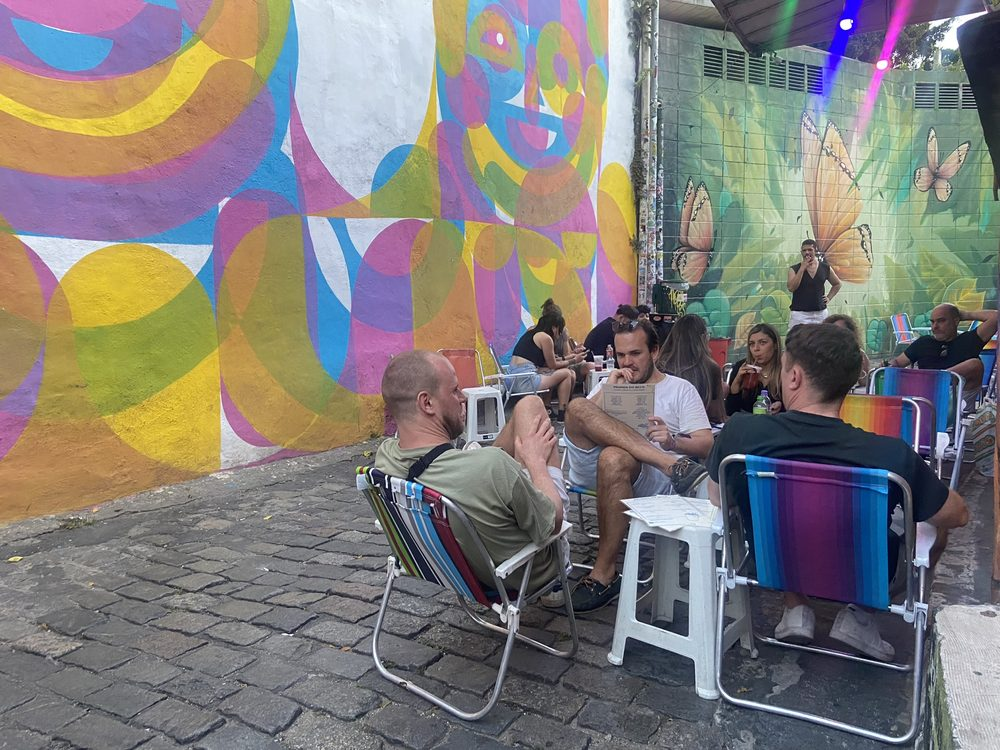
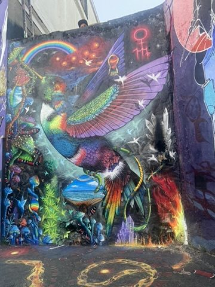
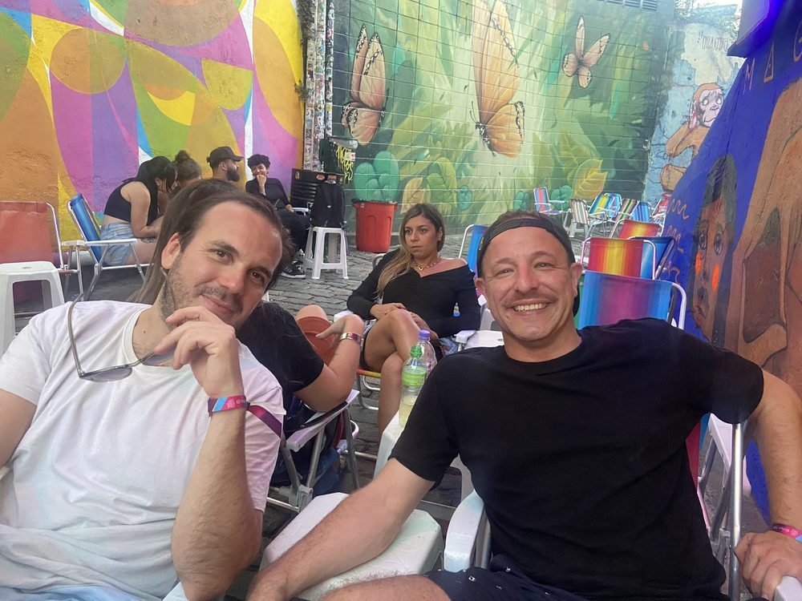
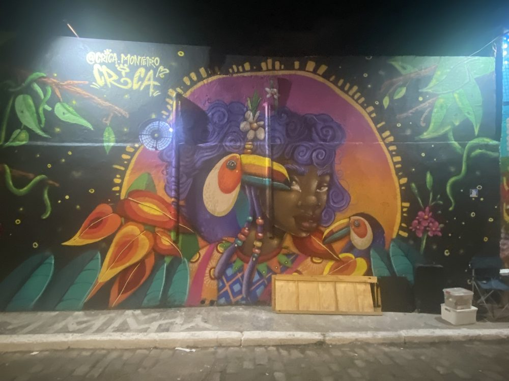
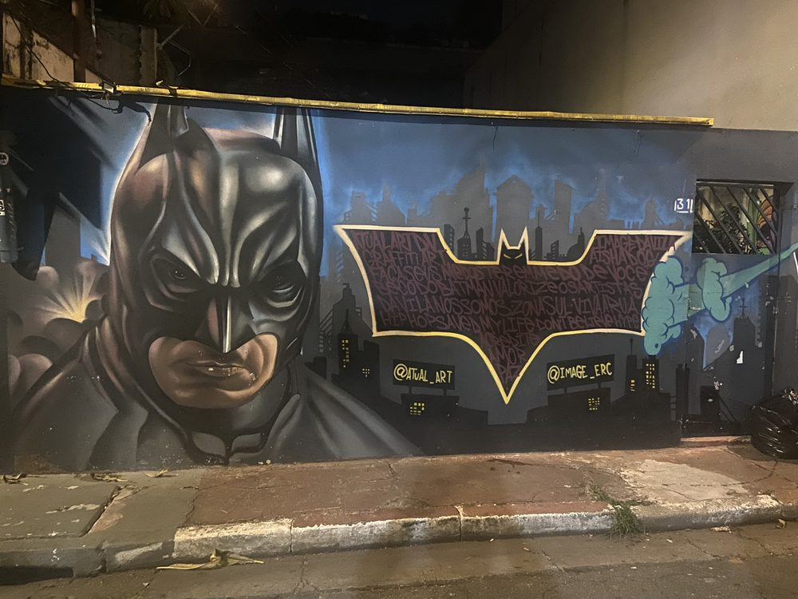
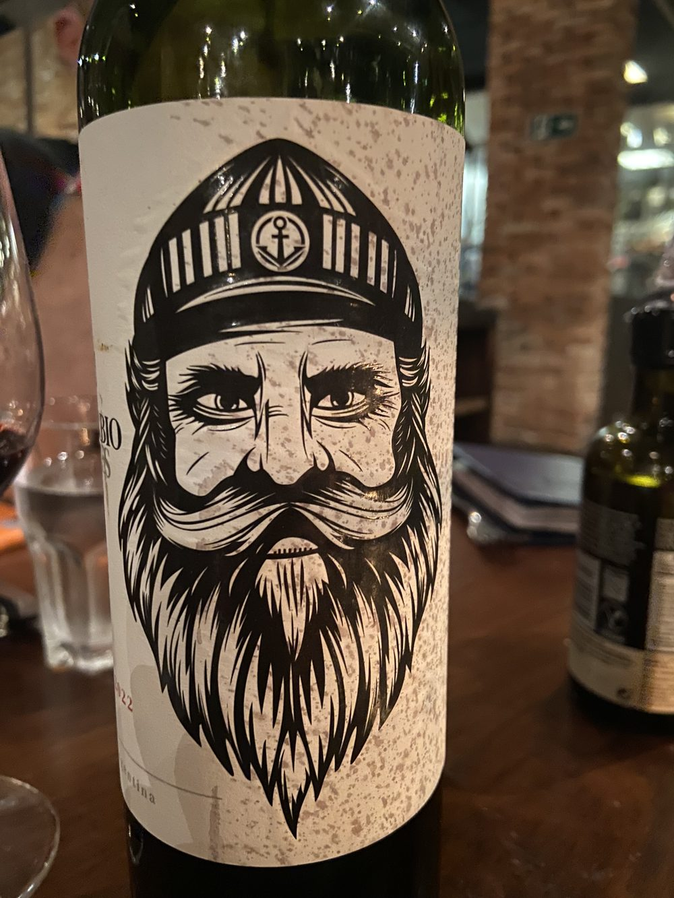
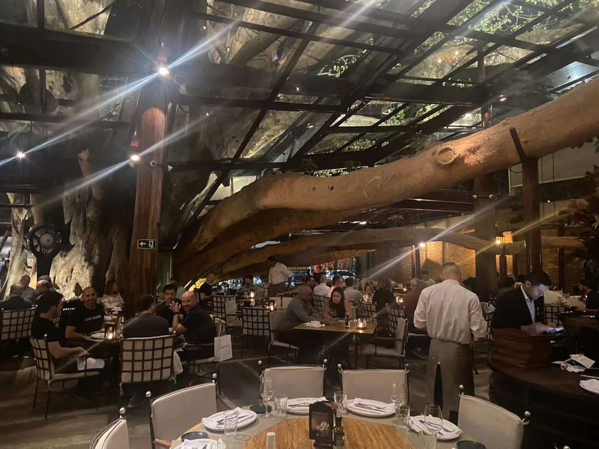